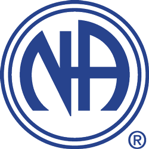
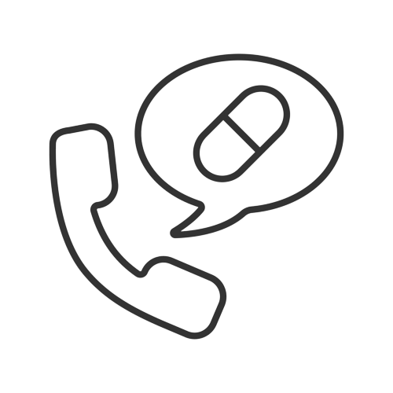
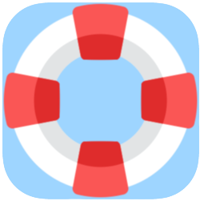
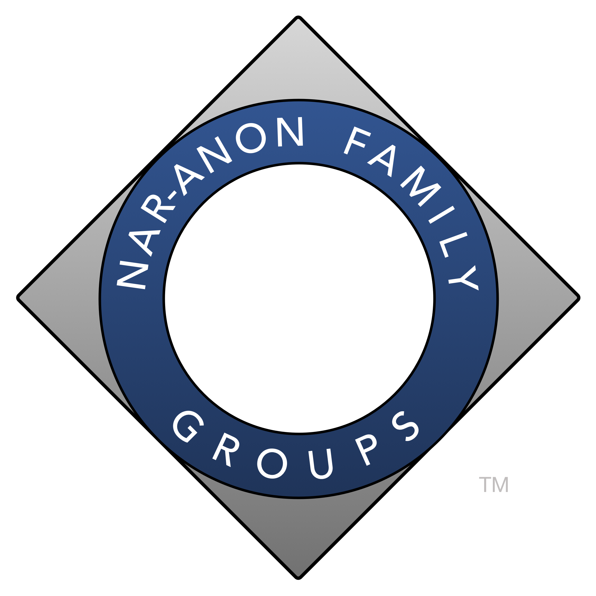

| Narcoticos anónimos são grupos de pessoas dependentes que se reunem regularmente com o intuito de se ajudarem mutuamente e manterem-se longe das drogas. Número telefónico: 219 447 970 |  |
| Linha Vida SOS Droga é um Serviço de Aconselhamento cujo objetivo é prestar suporte
emocional em situações de crise, esclarecer dúvidas e refletir sobre questões relacionadas com os
comportamentos aditivos, dependências e temáticas associadas. A funcionar todos os dias úteis das 10 às 18 horas. Número telefónico: 1414 |
 |
| A aplicação Pocket Rehab é uma aplicação designada para pessoas com vícios em drogas interagirem com outras pessoas com o mesmo problema anonimamente, assim podendo ser ajudado e ajudar. |  |
| A Nar-Anon Family Groups é um programa designado primariamente para aqueles que conhecem alguém desesperado por algum problema que tenha haver com vícios/quem é afetado pelo vício de outro. |  |